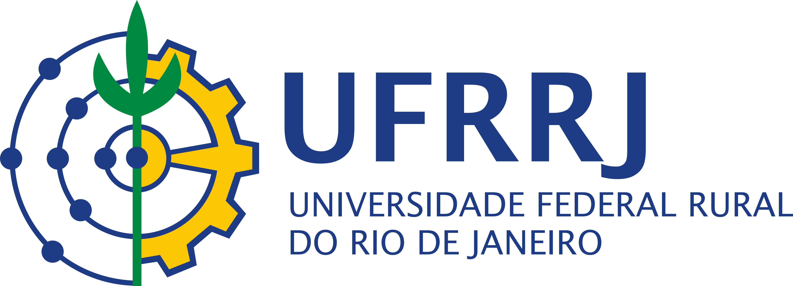
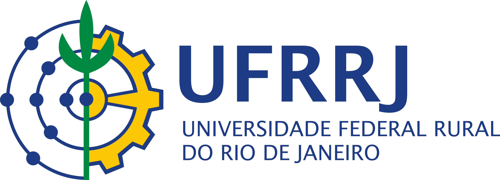

GO-FAIR é uma iniciativa global que promove a implantação dos princípios FAIR nas ações de governança e de gestão de dados e de objetos digitais, a fim de torná-los localizáveis, acessíveis, interoperáveis e reutilizáveis (do inglês FAIR - Findable, Accessible, Interoperable, Reusable).
O Escritório de Apoio de Coordenação GO-FAIR Brasil é um dos escritórios regionais de apoio e coordenação da rede GO-FAIR e tem a responsabilidade de difundir, apoiar e coordenar as atividades relacionadas à adoção da estratégia de implementação dos princípios FAIR definida pela iniciativa GO-FAIR em todo o território brasileiro.
A missão da Rede GO-FAIR Brasil Agro consiste em trabalhar de modo articulado e colaborativo para fomentar o compartilhamento e reuso dos dados produzidos no âmbito dos sistemas produtivos agropecuários e também aqueles oriundos de pesquisas em ciências agrárias, bem como a adoção dos princípios FAIR. Seu funcionamento se dá por meio de Grupos de Trabalho que desenvolvem ações de forma cooperativa e voluntária.
Saiba mais sobre os objetivos específicos da Rede.
MANIFESTO
A Rede GO-FAIR Agro Brasil é coordenada pela Empresa Brasileira de Pesquisa Agropecuária (Embrapa) em gestão colegiada com a Universidade Federal Rural do Rio de Janeiro (UFRRJ), a Universidade de São Paulo (USP), a Universidade Federal do Pampa (Unipampa) e a Universidade Federal do Rio de Janeiro (UFRJ) com a possibilidade de ampliação de acordo com o engajamento de outras instituições e organizações.